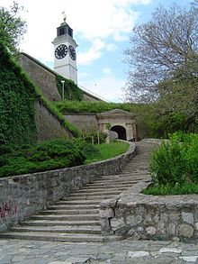

Ono što izdvaja Petrovaradin od ostalih destinacija, kao turističko mesto, su sama Petrovaradinska tvrdjava, sam Petrovaradin i Fruska gora i okolina Petrovaradina sa prelepim vinogradima kao i festival Exit i Gradić sa svojim kafićima, picerijama, i festivalom uličnih svirača, kao i sam zivot u Petrovaradinu
Petrovaradinska tvrdjava
Prvo kad se spomene Petrovaradin pomisli se na Petrovaradinsku tvrdjavu (mapa petrovaradina).
Danas je Tvrđava umetnički centar sa mnoštvom ateljea priznatih umetnika, Akademijom umetnosti, uređenim stazama i podzemnim hodnicima koji privlače brojne posetioce grada. Bastione trase doprinele su atraktivnosti čuvenog Jelisavetinog Bastiona koji je status centralnog „klaberskog“ mesta uspešno održavao godinama. Petrovaradinska tvrđava je demilitarizovana sredinom XX veka i proglašena istorijskim spomenikom. Danas se tamo nalazi uređeno šetalište, restorani i hoteli na petrovaradinskoj tvrdjavi, umetničkih ateljea i galerija, vojna kasarna, novosadska Akademija umetnosti, planetarijum i astronomska opservatorija, neprevaziđena panorama Novog Sada, kao i Muzej i Arhiv grada.
Sat petrovaradinska tvrdjava

Toranj sa satom je prepoznatljiv znak Petrovaradinske tvrđave i Novog Sada. To je sat-kula Bastiona Svetog Luja. Poklonila ga je carica Marija Terezija pocetkom 18 veka. Dobio je naziv Pijani sat zbog toga sto je nekada davno brodovima koji su plovili Dunavom trebalo da pokaze vreme, pa velika kazaljka pokazuje sate, jer je u vreme magle bila vidljivija a mala kazaljka minute. Sat se navija rucno svaki dan. a pored ove istorijske cinjenice omiljeno je mesto za turiste, mladih parove koji vole da se slikaju pored ovog sata. Zovu ga jos i magicni sat.
 Zadnje dve godine podgradje Petrovaradinske tvrdjave takozvani Gradic sve vise je ukljucen u kulturna desavanja pa pored exit fest odrzava se i festival ulicnih sviraca koji okuplja veliki broj performera iz mnogih zemalja. U programu ucestvuju izvodjaci iz Srbije, regiona, Evrope, drugih udaljenih drzava. Odrzavaju se muzicki nastupi,filmske i video projekcije, ambijentalne predstave...ta tri dana Gradic postaje pesaka zona i mesto dobre energije, pozitivne atmosfere..
Zadnje dve godine podgradje Petrovaradinske tvrdjave takozvani Gradic sve vise je ukljucen u kulturna desavanja pa pored exit fest odrzava se i festival ulicnih sviraca koji okuplja veliki broj performera iz mnogih zemalja. U programu ucestvuju izvodjaci iz Srbije, regiona, Evrope, drugih udaljenih drzava. Odrzavaju se muzicki nastupi,filmske i video projekcije, ambijentalne predstave...ta tri dana Gradic postaje pesaka zona i mesto dobre energije, pozitivne atmosfere..